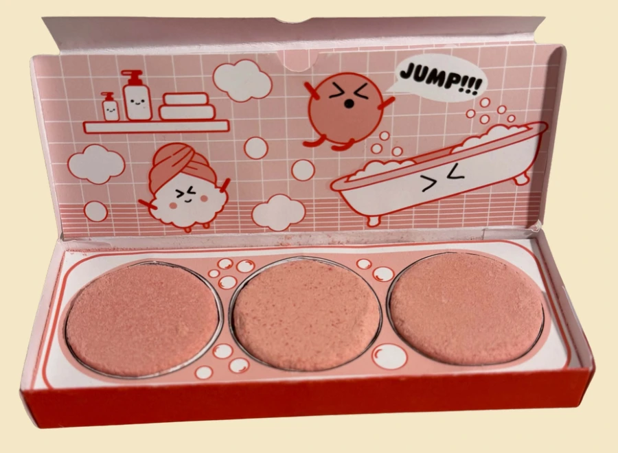

Let the form tell the story
A shallow, hinged box and a three-circle insert make the bathtub idea tangible. The intention is to connect the package to the moment the product is used.
01 / Packaging design · Student project
Turning three peppermint bath fizzers into a playful, bathtub-inspired unboxing experience.
Read the case study
01 / The challenge
The assigned product was Bathelosophy’s peppermint bath fizzers: three individually wrapped fizzers inside a colorful, candy-shaped package. I explored how a redesigned package could connect more clearly to the bathing experience and present the three products as one set.
My intended audience is people drawn to playful bath products and small gifts. The illustrated direction may also appeal to younger audiences, but audience preference and age suitability have not been validated.
Design opportunity, not a proven customer pain point: this project started with product observation and classroom exploration, not customer interviews.
02 / My contribution
I developed the packaging concept through visual research, original and refined sketches, vector artwork, and printed prototypes. My work brought together the outer box, the three-product insert, and the interior illustration.
The bath product is an existing product. This is an independent academic redesign, not a commissioned or commercially released package.
03 / Design decisions
A shallow, hinged box and a three-circle insert make the bathtub idea tangible. The intention is to connect the package to the moment the product is used.
The red exterior creates a clear visual identity. Inside, pink illustrations, bubbles, and characters give the opening sequence a softer, more playful tone.
The lid becomes a small scene, while the insert presents each fizzer individually. The interaction moves from a simple closed box to a more expressive interior.
These are design intentions. Recognition, opening ease, and emotional response still need user testing.
04 / Iteration & feedback
Class feedback encouraged me to develop the lid idea, consider an interior pattern, and make the structure feel more like a bathtub. The final design brings these ideas together through an illustrated lid, a coordinated interior, and a three-part tray.
The documented progression shows multiple structural sketches, printed prototypes, and a finished graphic system. These are classroom critique and physical prototyping—not a formal usability study.
01 / Original sketches
Early sketches compare different ways to contain and reveal the product before committing to the final box.
Select the image to see it larger.
The slides document low-, mid-, and high-fidelity printed models. They do not record measured opening times, participant observations, shipping tests, or a controlled comparison between versions.
The final design
Actual photographs of my printed packaging prototype.
05 / Outcome & limits
I completed a physical packaging prototype and documented the process from sketches to the final printed design. The outcome brings structure, typography, product information, and illustration into a coordinated packaging concept.
Structural explorations, vector layouts, three levels of printed prototypes, and photographs of the final package.
No measured sales impact, preference study, accessibility evaluation, moisture resistance, shipping durability, production costing, or material lifecycle assessment.
“BUY LES” is the concept identity shown on the package. The name does not demonstrate reduced consumption or environmental benefit. This case study makes no sustainability or safety-certification claim.
Next steps